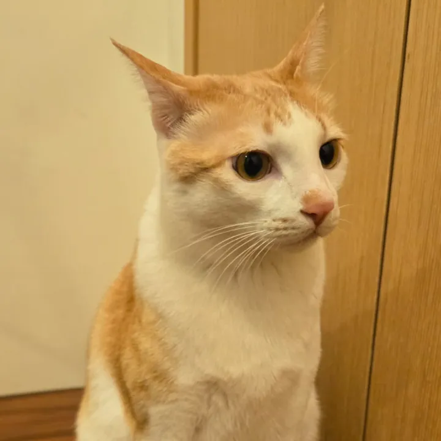
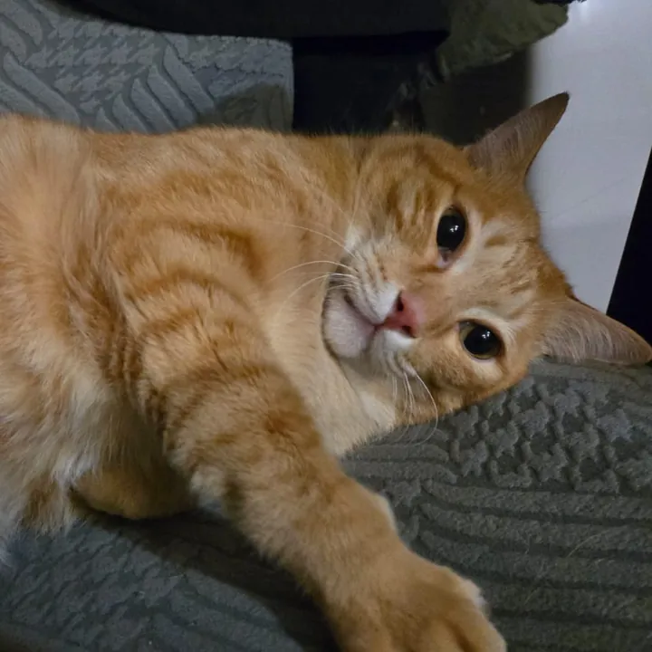
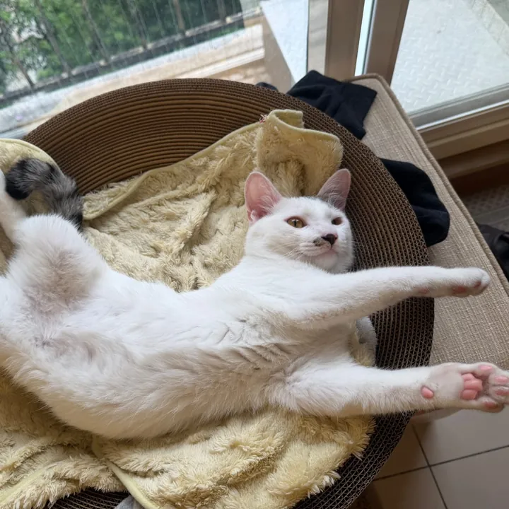
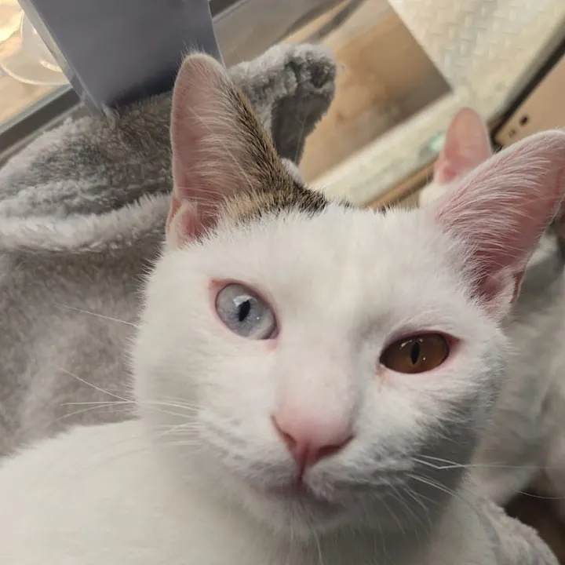

一個從四隻家貓出發，想邀請全球貓咪一起參與的瘋狂實驗
最初是兩次不期而遇的領養，後來又主動迎來了兩兄弟。四隻貓咪讓我深刻感受到——愛貓人士，真的無處不在。牠們不只是寵物，更像是家人，帶來的歡笑與療癒遠遠超出想像。
2010 年世界盃，德國章魚哥 Paul 以接近完美的預測成績震驚全球。而日本自古流傳的招財貓傳說，更讓人對動物與好運之間的連結充滿好奇。 這個想法在心裡悄悄發芽——如果換成全球的貓咪來選樂透號碼呢？




三個看似不相關的事物，串起了 LuckyCat 的誕生。
這不只是一個選號工具——它是一場全球規模的貓咪幸運大調查。
當我們累積足夠多的資料，也許能開始探索一些有趣的問題：橘貓真的比較幸運嗎？圓臉貓和尖臉貓的中獎率有差異嗎？ 短毛與長毛、胖貓與瘦貓、獨居貓與群居貓⋯⋯這些特徵與幸運之間，是否存在某種神秘的關聯？
我們不敢保證找到答案，但我們敢保證——這會是一段有貓有笑、有夢有據的旅程。
LuckyCat 是一個完全免費的全球貓咪幸運統計計畫 🐱
由一個愛貓人士發起，歡迎你的貓咪加入